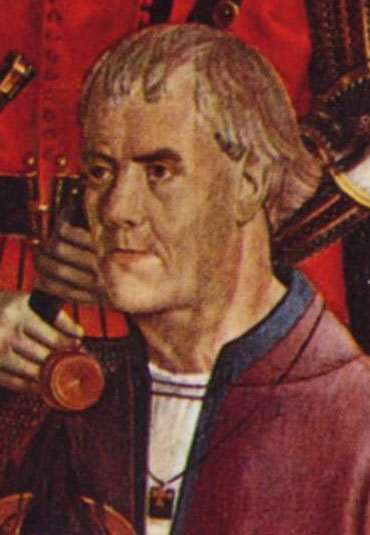
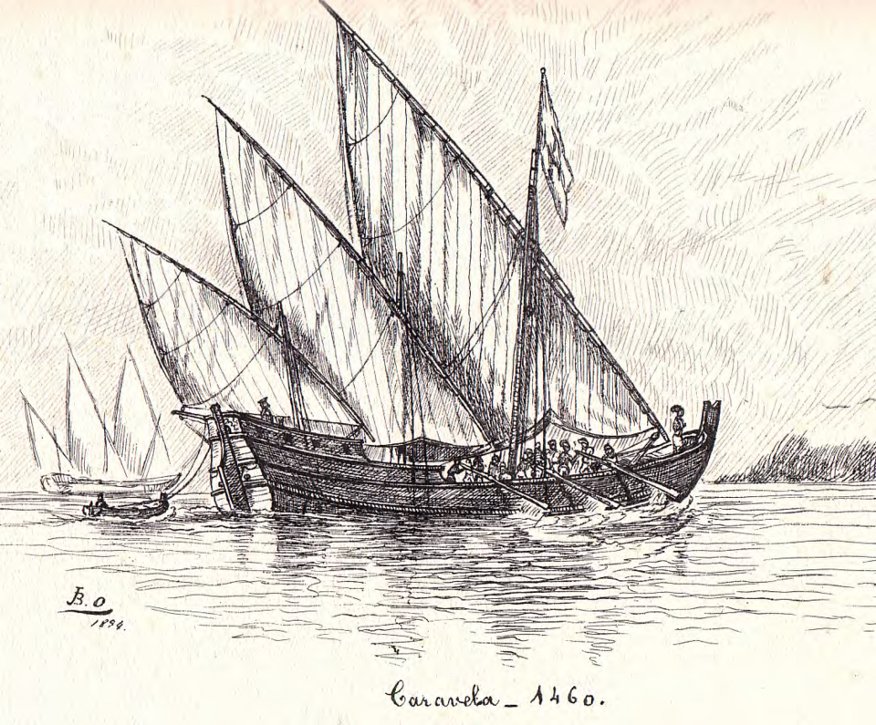
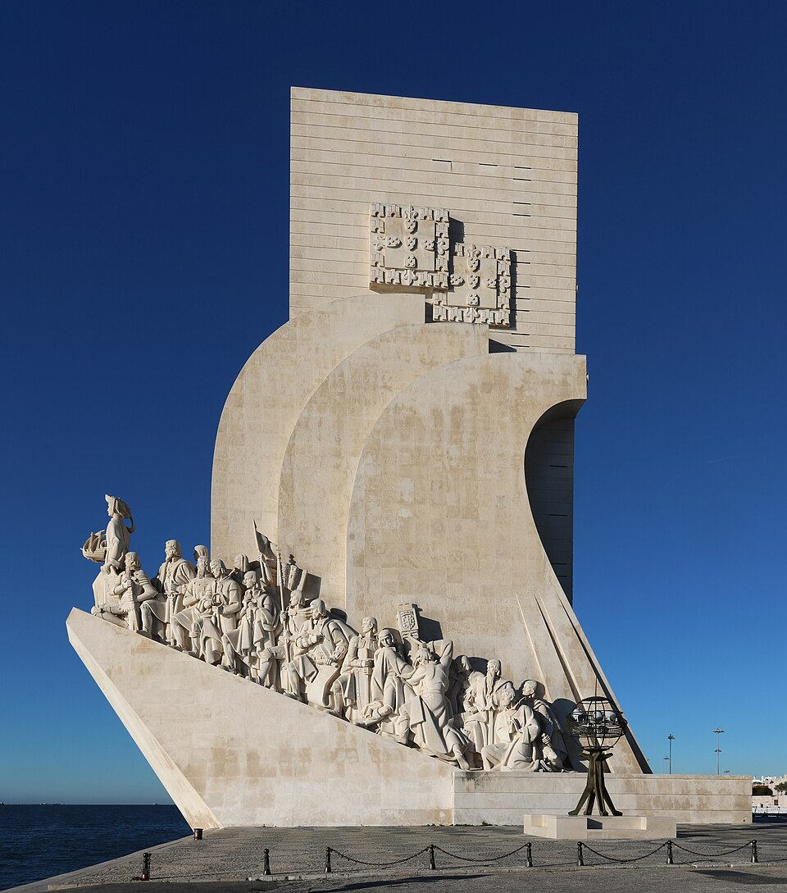

⏱️ 10초 카드 · 대항해의 설계 (1394~1460)
항해왕자보자도르 곶 돌파같은 장부의 노예무역
여는 질문 — 위대한 업적의 자금은 어디서 왔을까?
이름
한국어엔히크 항해왕자
원어Infante Dom Henrique
실제 발음엔히크
로마자Henrique o Navegador
영어권Prince Henry the Navigator
별칭항해왕자
왜 이 사람인가
이 도감에서 엔히크는 '업적의 자금 출처를 묻는' 역사 탐정의 본보기예요. 그는 탐험을 '한 영웅의 모험'에서 '대를 이어 축적되는 국가 프로젝트'로 바꾼 설계자였죠. 그러나 그 프로젝트의 수익원에는 대서양 노예무역의 시작이 있었어요 — 영광과 비극이 같은 장부에 적혀 있는 인물이에요.
생애
포르투갈 왕의 셋째 아들로, 1415년 세우타 원정에 참가한 뒤 평생을 바다 탐험 후원에 바쳤어요. 본인이 먼 항해에 나선 적은 거의 없지만, 항해사·지도제작자·천문학자를 모으고 항해 기록을 쌓아 다음 항해에 넘기는 '지식 축적 시스템'을 만들었죠.
그의 집요한 후원으로 '세상의 끝'이라 불리던 보자도르 곶의 공포가 깨졌고(1434), 포르투갈 배들은 한 해 한 해 아프리카 해안을 남하했어요. 그가 죽은 뒤에도 이 시스템은 굴러가 희망봉(1488)과 인도 항로(1498)로 이어집니다.
하지만 같은 장부에 그림자가 적혀 있어요 — 그가 후원한 항해들은 1440년대부터 서아프리카 사람들을 사로잡아 파는 노예무역을 시작했고, 그 수익이 탐험 자금이 됐죠. '항해왕자'의 영광과 대서양 노예무역의 시작은 같은 사업의 양면이었어요.
자료로 보기 — 유묵·사진



남긴 말
“그는 보자도르 곶 너머에 무엇이 있는지 기어이 알고자 했다.”
연대기 작가 주라라가 기록한 엔히크의 집념 — 그 자신의 말이 아니라 당대의 기록이에요. · 출처: 주라라 『기니 정복 연대기』(요지)
“1444년 라구스에서, 사로잡혀 온 사람들이 가족과 갈라진 채 나뉘어 팔렸다.”
바로 그 주라라가 첫 노예 경매를 기록한 장면 — '항해왕자'의 영광 바로 옆에 있던 그림자예요. · 출처: 주라라 『기니 정복 연대기』(요지)
연표
- 1394출생 (포르투)
- 1415세우타 원정 참가
- 1434후원한 항해가 보자도르 곶 돌파
- 1440s후원 항해들, 노예무역 시작 (그림자)
- 1460사망 — 시스템은 인도 항로까지 이어짐
생애의 길 — 포르투에서 아프리카 해안까지 🗺️
왕자의 출생에서 세우타 원정으로, 거점 사그레스에서 '세상의 끝' 너머로. 번호를 차례로 눌러 보세요.
현재 지도 위 경로예요. 포르투갈 남단에서 아프리카 해안을 따라 내려간 이 길이 인도 항로로 이어졌지만 — 같은 길로 노예무역도 시작됐어요. 한 화살표의 두 얼굴이죠.
빛과 그림자탐험을 '한 영웅의 모험'에서 '축적되는 국가 프로젝트'로 바꾼 설계자 — 그러나 그 프로젝트의 수익원에 노예무역이 있었어요. 위대한 업적의 자금 출처를 묻는 것, 역사 탐정의 기본기예요.
더 깊이 (고등·일반)
항해하지 않은 항해왕자
엔히크는 포르투갈 왕의 셋째 아들로, 본인이 먼 항해에 나선 적은 거의 없어요. 그런데도 '항해왕자'라 불리죠. 그가 한 일은 항해사·지도제작자·천문학자를 한데 모으고, 한 항해의 기록을 다음 항해에 넘겨 조금씩 더 멀리 가게 하는 '지식 축적 시스템'을 만든 거예요. 모험을 '시스템'으로 바꾼 셈이죠.
참고: 엔히크의 항해 후원 일반
'세상의 끝'의 공포를 깨다 (1434)
당시 뱃사람들은 아프리카 서해안의 보자도르 곶 너머를 '세상의 끝, 돌아올 수 없는 바다'라며 두려워했어요. 엔히크의 집요한 후원으로 1434년 한 선장이 마침내 그곳을 돌파했고, 공포가 깨지자 포르투갈 배들은 한 해 한 해 더 남쪽으로 내려갔죠.
참고: 보자도르 곶 돌파(1434) 일반
죽은 뒤에도 굴러간 시스템
엔히크가 만든 시스템의 진짜 힘은, 그가 죽은 뒤에도 멈추지 않았다는 거예요. 축적된 항해 지식은 계속 이어져, 1488년 희망봉을 돌고 1498년 바스쿠 다 가마가 인도 항로를 여는 데까지 이르렀죠. 한 사람의 모험이 아니라 '제도'가 세계를 연 거예요.
참고: 희망봉·인도 항로 일반
같은 장부의 그림자 — 노예무역의 시작
그러나 같은 장부에 어두운 기록이 있어요. 엔히크가 후원한 항해들은 1440년대부터 서아프리카 사람들을 사로잡아 유럽에 파는 노예무역을 시작했고, 그 수익이 다시 탐험 자금이 됐죠. 훗날 수백 년 이어질 대서양 노예무역의 첫 단추가, '항해왕자'의 영광과 같은 사업의 양면이었던 거예요.
참고: 초기 대서양 노예무역 일반
영광과 비극을 함께 묻기
엔히크를 '위대한 개척의 아버지'로만 외우면 절반만 아는 거예요. 그 위대한 항해의 자금이 어디서 왔는지를 함께 물어야 하죠. '이 업적의 돈은 누구의 고통에서 나왔나?' — 이 질문이야말로 역사 탐정의 기본기이고, 엔히크는 그 연습 문제로 딱 맞는 인물이에요.
참고: 엔히크 평가 일반
이 인물이 나오는 이야기
더 공부하기 — 여기서 출발하세요
📚 책으로
- 대항해시대 ↗포르투갈이 연 80년의 항해 — 그 빛과 그림자.
- 검은 대서양 — 노예무역의 역사 ↗항해의 자금이 된 노예무역, 그 시작을 추적.
📜 1차 사료
- 주라라 『기니 발견·정복 연대기』 ↗엔히크의 후원과 첫 노예 경매를 함께 기록한 당대 연대기.
🎬 영상으로
- 〈포르투갈 제국과 대항해시대〉 다큐 ↗🟡 엔히크가 연 포르투갈의 항해를 큰 흐름으로 보는 다큐 — 영광과 함께 노예무역의 그림자도 떠올리며 보세요(영어).
📍 가 볼 곳
- 사그레스 곶 (포르투갈) ↗엔히크가 항해 인재를 모았다고 전해지는 남단의 거점.
- 라구스 (포르투갈)항해의 출발항이자 — 유럽 최초의 노예시장이 선 곳.